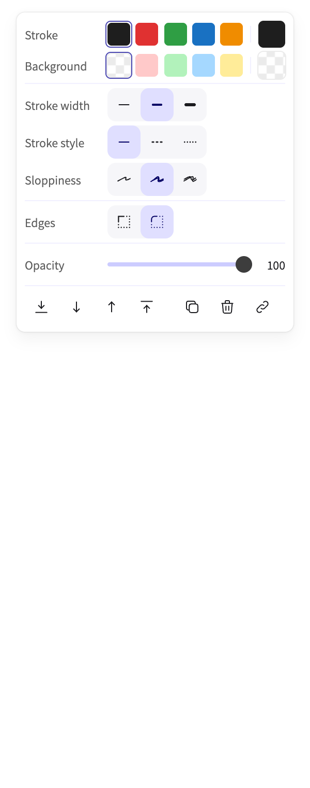
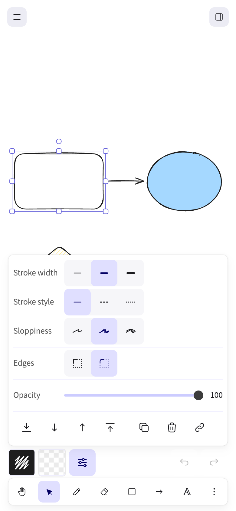
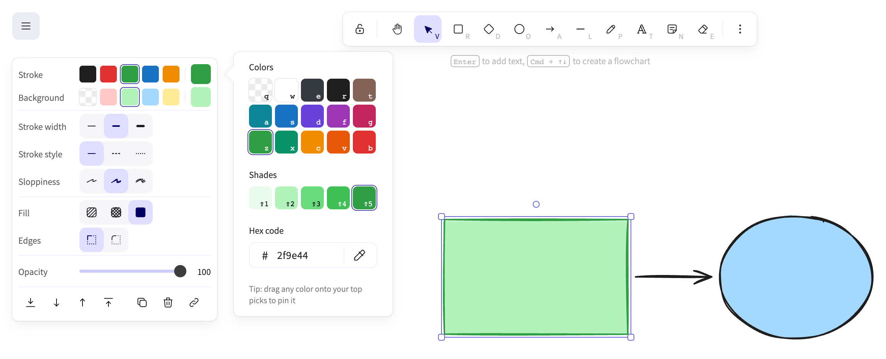
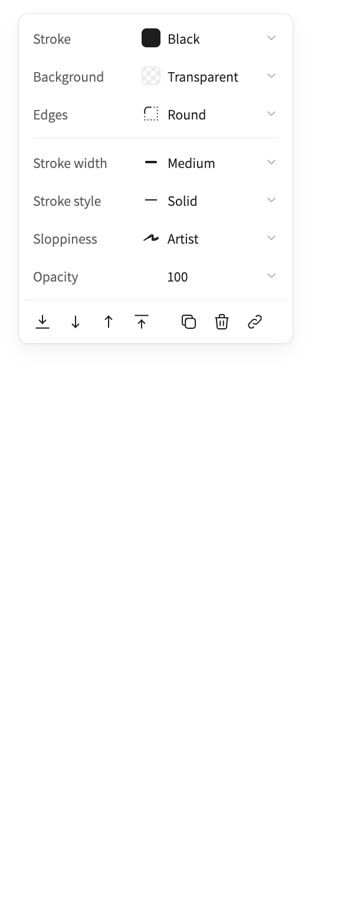
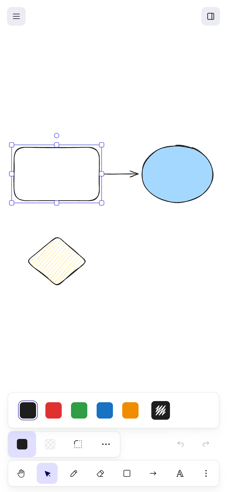
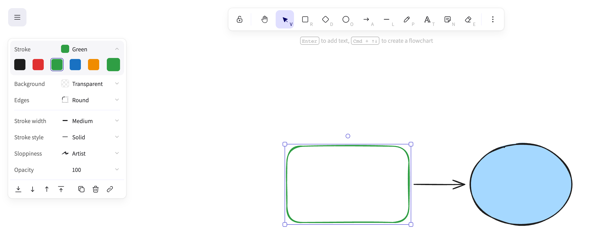
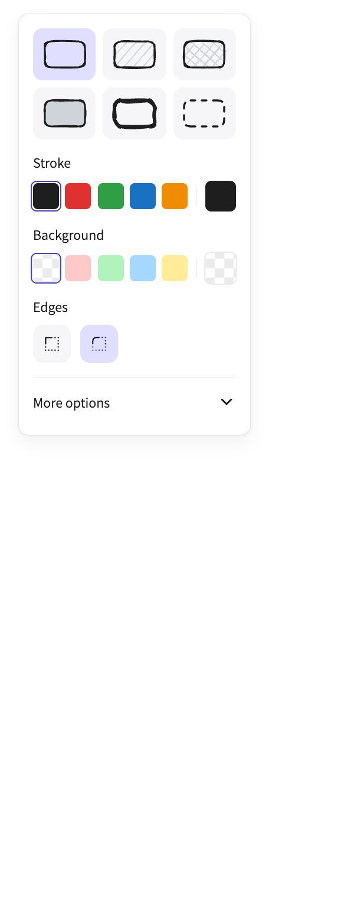
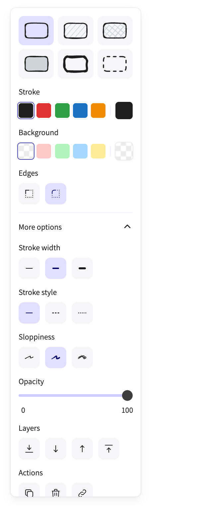
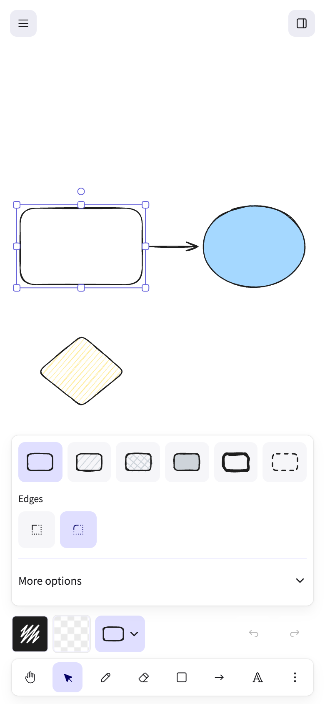
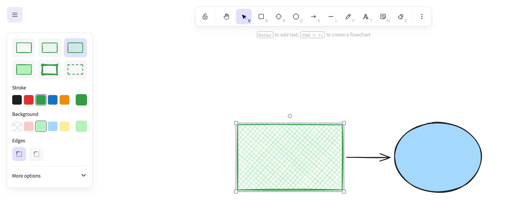

Variation 1
Tidy sheet
Every option stays in view, as a tight property sheet with inline labels, at about half today's height.
What changes







How it works
Tidy sheet keeps today's controls and changes the layout. Each property gets one row, with a short label on the left and its choices on one track on the right. The current values line up in one column, so the sheet also reads as a summary of the style. On a phone, stroke and background stay in the bar and the rest opens in a tray above it.
What works
- Nothing moves behind a click, and every control is one people already know.
- It's about half as tall as today's panel. With three shapes selected, today's panel scrolls and the sheet doesn't.
What doesn't
- It's wider than today's panel (268 px against 195 px), so it covers a little more of the canvas.
- It tidies today's panel more than it rethinks it.
Code
- Branch
lab/panel-v1- Worktree
properties-panel-variation1-tidy-sheet- Draft pull request
- Pull request #1
The code is in a private repository, so the branch and pull request links only open for its owner.
Variation 2
Value rows
One row per property shows its current value; open one row at a time to change it, right there.
What changes






How it works
Value rows turns the panel into a short summary of the selection. Each property is one row with its name and current value, like Stroke: Black or Edges: Round. Click a row and today's control opens right under it, pushing the rows below down. One row is open at a time, and it stays open when the selection changes. On a phone, stroke, background and edges become chips in the bar, and More options holds the rest.
What works
- You can read the whole style at a glance.
- It's about half as tall as today's panel, and every control is still in it.
What doesn't
- Every change takes one more click than today.
- Changing several things means opening several rows, and the full palette still opens beside the panel.
Code
- Branch
lab/panel-v2- Worktree
properties-panel-v2-value-rows- Draft pull request
- Pull request #2
The code is in a private repository, so the branch and pull request links only open for its owner.
Variation 3
Looks
Pick a whole look in one click, then adjust stroke, background and edges right below; fine controls fold under More options.
What changes








How it works
Looks starts with six whole looks for the selected shape: outline, hatched, cross-hatched, solid, bold sketch and dashed, each drawn in the shape's own colors. One click sets the fill, stroke width, stroke style and sloppiness together, and one undo takes it back. Stroke, background and edges stay right below as today's controls. Everything else folds under More options, which opens in place.
What works
- You pick a result you can see, in your own colors.
- The controls people change most stay right where they are.
What doesn't
- Six looks can't cover every mix, so some changes still mean opening More options.
- A look can clear a background you set.
- With More options open, the panel gets long and scrolls.
Code
- Branch
lab/panel-v3- Worktree
properties-panel-v3-variation-3- Draft pull request
- Pull request #3
The code is in a private repository, so the branch and pull request links only open for its owner.